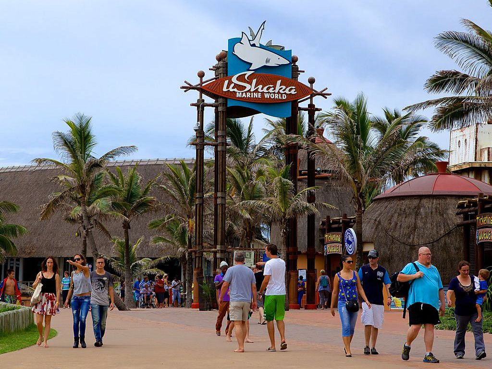
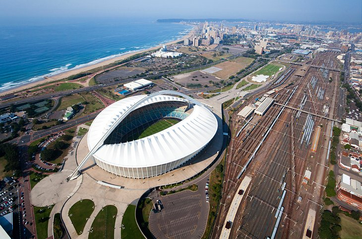

Attractions
Golden Mile

A good starting point for a walking tour of Durban is the "Golden Mile." This bustling beachfront promenade is lined with high-rise hotels, entertainment complexes, shops, and restaurants. The broad, golden beaches are a magnet for water sports enthusiasts who come here to surf, swim, fish, or just bask in the sunshine. Lifeguards and shark nets protect most of the beaches year-round. One can certainly enjoy.
uShaka Marine World
uShaka Marine World, one of the main attractions on Durban's Golden Mile, is a water-themed wonderland packed with attractions. Sea World, set on replicas of four shipwrecks, features the largest aquarium in the southern hemisphere, where visitors can get up close to marine life through underground viewing galleries.Other attractions here include a Dolphin Stadium, Seal Stadium, and Penguin Rookery.
Moses Mabhida Stadium
Moses Mabhida Stadium is a world-class sporting and event venue on Durban's Golden Mile. The stadium hosted eight of the FIFA World Cup Games in 2010. It provides a spectacular 360-degree view of Durban from the top of the stadium's arch. The Sky Car whisks visitors to the top, or they can climb the 500 steps. Thrill-seekers will love the 220-meter Big Rush Big Swing, the world's highest.